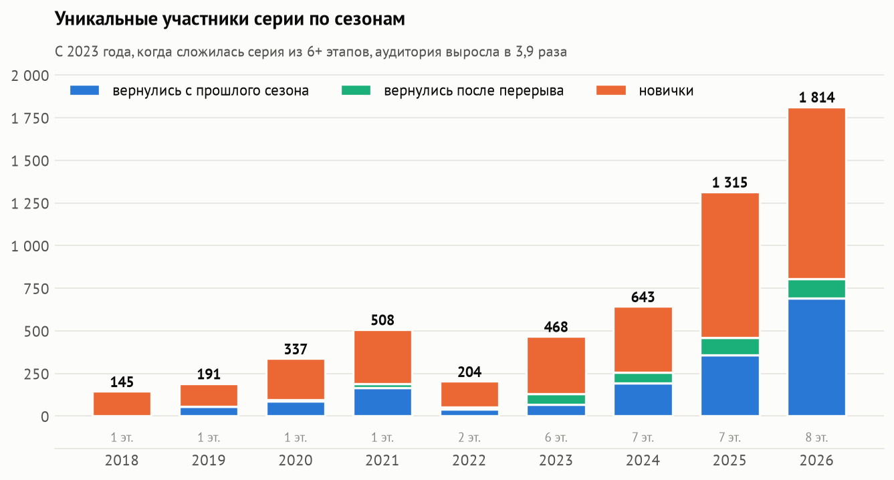
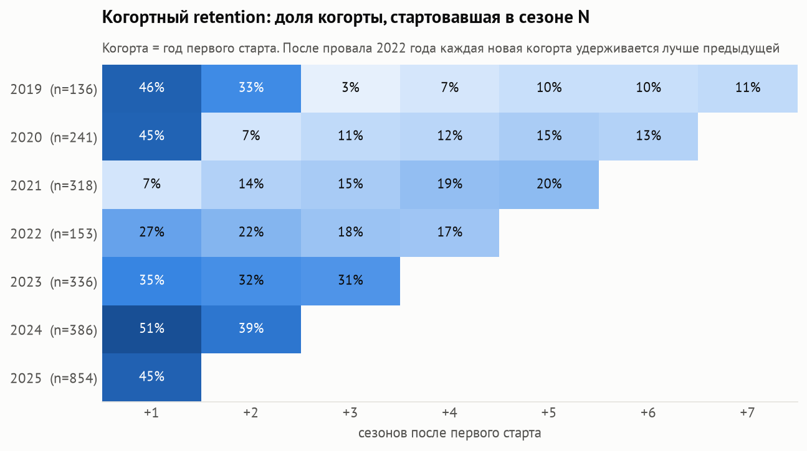
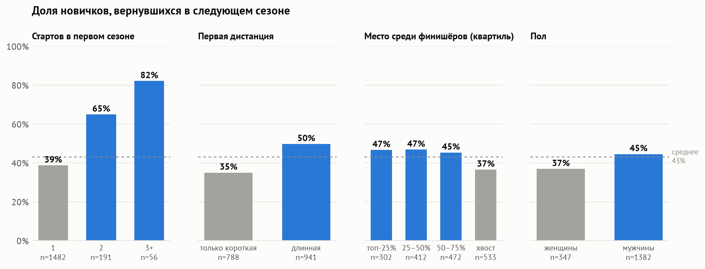
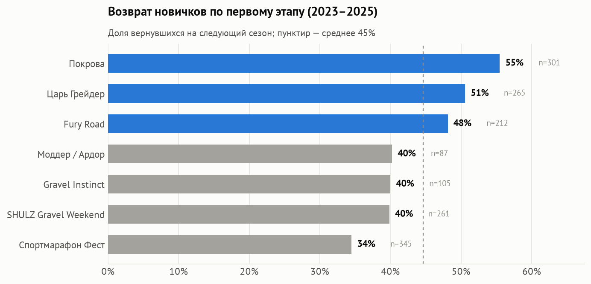
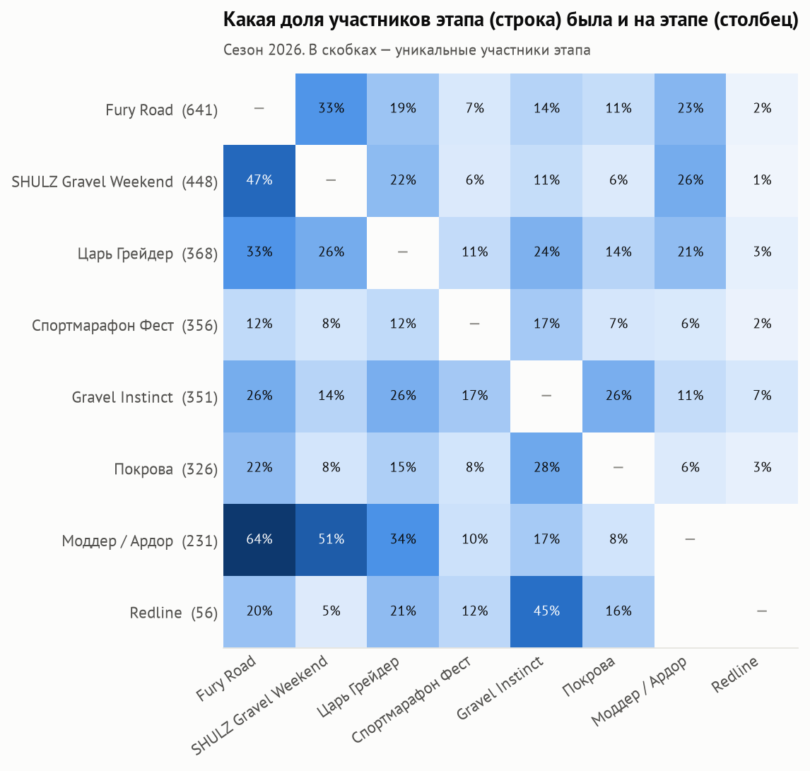
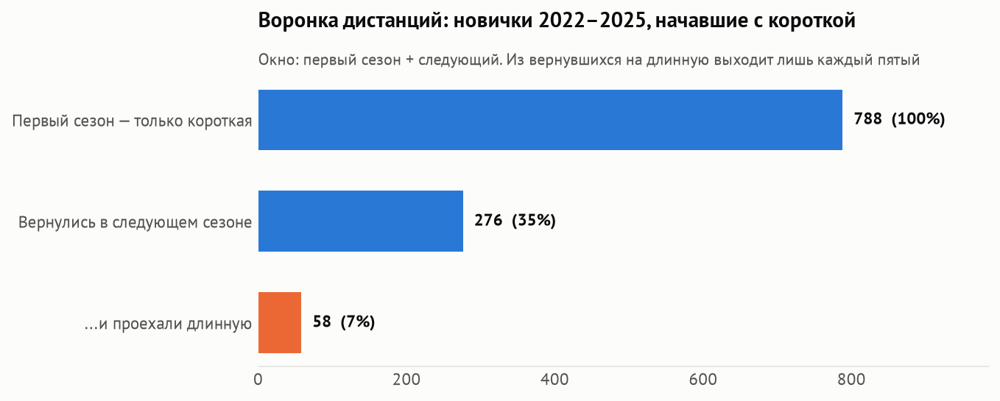

Рост аудитории, удержание, aha-момент и дизайн A/B-теста по открытому архиву протоколов
Подготовил: Царегородский Александр · аналитик данных · 2026
Заказчик — объединение организаторов серии. Решение: куда вкладывать усилия между сезонами — в привлечение новичков, в их удержание или в связку этапов между собой.
Источник — открытый API gravelseries.ru. Пайплайн: Python (выгрузка, очистка, сведение имён) → DuckDB + SQL (звёздная схема, витрины) → pandas / statsmodels (когорты, регрессия, мощность теста) → дашборд.



Новички 2022–2025 годов, n = 1 729. Возврат после одного старта — 39%, после двух — 65%, после трёх и более — 82%. Финиш в последней четверти протокола снижает возврат; разница по полу объясняется выбором дистанции.
| Фактор | OR: год | OR: год + этап |
|---|---|---|
| 2+ старта | 2,66 [1,96–3,60] | 2,92 [2,11–4,03] |
| Длинная дистанция | 1,55 [1,26–1,92] | 1,34 [1,00–1,78] |
| Последняя четверть | 0,69 [0,56–0,86] | 0,68 [0,54–0,85] |
| Женщина | 0,82, незначимо | 0,80, незначимо |
Логистическая регрессия. Вторая модель исключает объяснение «дело в этапе, а не в числе стартов». Самоотбор по мотивации в протоколах не виден, поэтому нужен тест.
| Дизайн A/B-теста | |
|---|---|
| Воздействие | промокод на следующий этап для финишёров первого старта |
| Основная метрика | доля новичков с 2+ стартами в сезоне (база 19,1%) |
| Вторичная / защитная | возврат в след. сезоне / выручка с новичка |
| Мощность | ~850 новичков за сезон, 50/50 → MDE ≈ 9 п.п.; для +5 п.п. — два сезона |



Главный рычаг удержания: шансы вернуться ×2,7–2,9. Запустить A/B-тест промокода на второй этап.
Вести аудиторию Fury Road на остальные этапы; перенять практики Покровы и Царь Грейдера.
Отдельный продукт со своим удержанием (35%); на фестивальных дистанциях бороться с неявкой 23–27%.
Ограничения. Гонщики сведены по имени, тёзки ~0,3%. Сходы и неявки есть не во всех протоколах. Нет возраста, региона и цены слота. У этапов до 2026 года нет дат. Рекомендации — гипотезы для проверки, а не доказанная причинность.